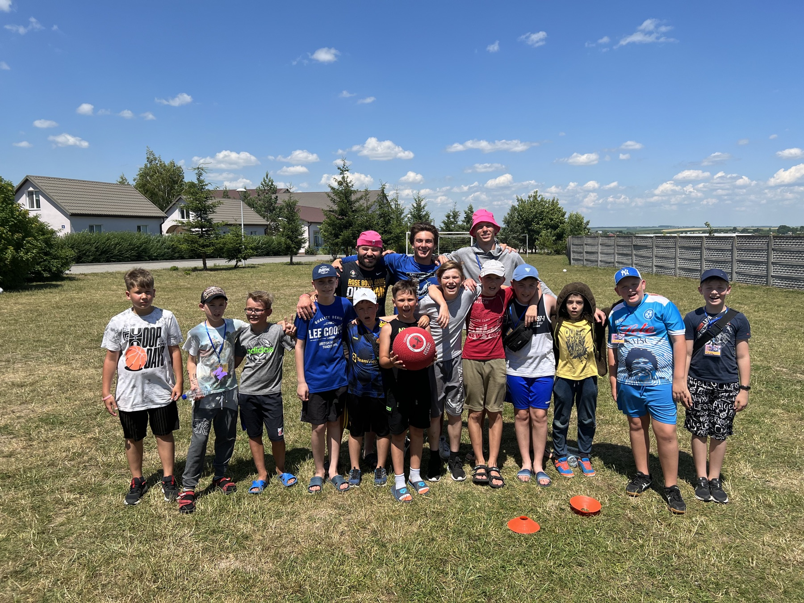
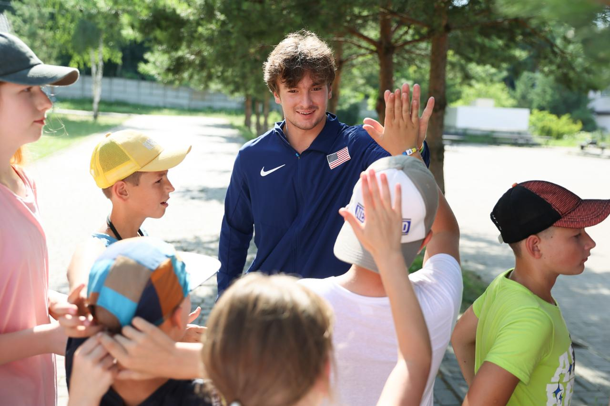
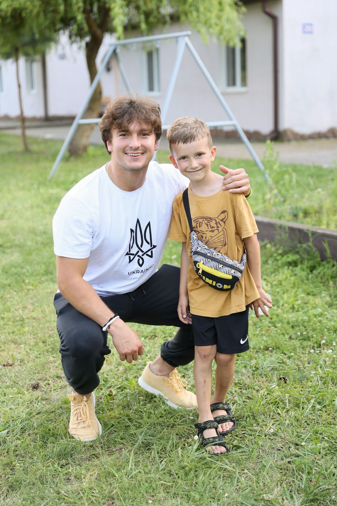
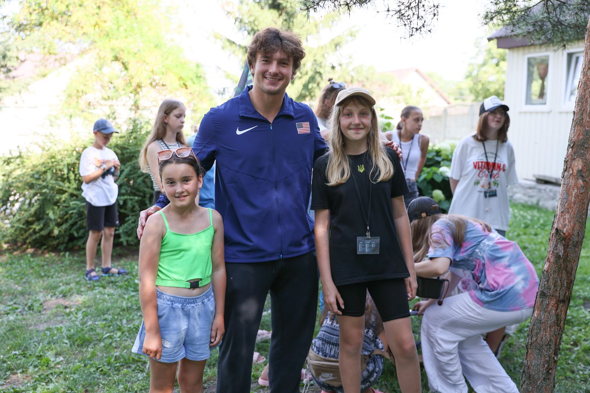
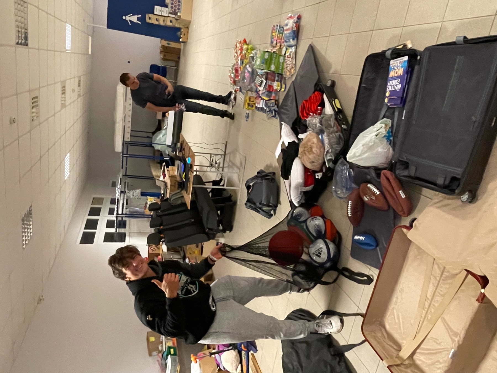

Tough Kids Boot Camp
Strength is something you build in kids before the world tests it.



I founded Tough Kids Boot Camp in January 2021, at sixteen, because I kept meeting kids who had never been taught the things that hold a life together under pressure: discipline, accountability, respect, and what to do when a situation starts to go wrong.
TKBC is a 501(c)(3) that teaches at-risk teens leadership, discipline, and crisis de-escalation in a boot-camp environment. The curriculum was developed with the Lee County Sheriff's Office — so the de-escalation training reflects how real encounters unfold — and the program partners with the Boys & Girls Club of America to reach the kids who need it most.
The playbook behind the camp became a book: Tough Kid Mindset — The Serious Teenager's Guide to Life, a #1 Amazon bestseller I wrote at seventeen. It defines what a real "Tough Kid" is: purpose-driven, respectful, disciplined, a leader, faithful, humble, and confident.
TKBC Ukraine — Ternopil · Summer 2022
In the first summer of the full-scale invasion, I moved to Ternopil, in western Ukraine, as General Director of TKBC Ukraine — serving as Sports Director of an orphanage summer camp for 600 displaced children, kids who had lost homes, and in many cases families, to the war in the east.
The camp ran six weeks. My job was the part of the day where kids got to be kids again: sport, competition, structure, and the small daily victories that rebuild a sense of control when everything else has been taken away. It was the same Tough Kid Mindset curriculum from Naples — translated into a war zone.



That summer changed the direction of everything I've built since. It's why Students Supporting Ukraine exists, why a school stands in Kyiv, and why I still believe the most important design problem is a kid who needs a reason to keep going.